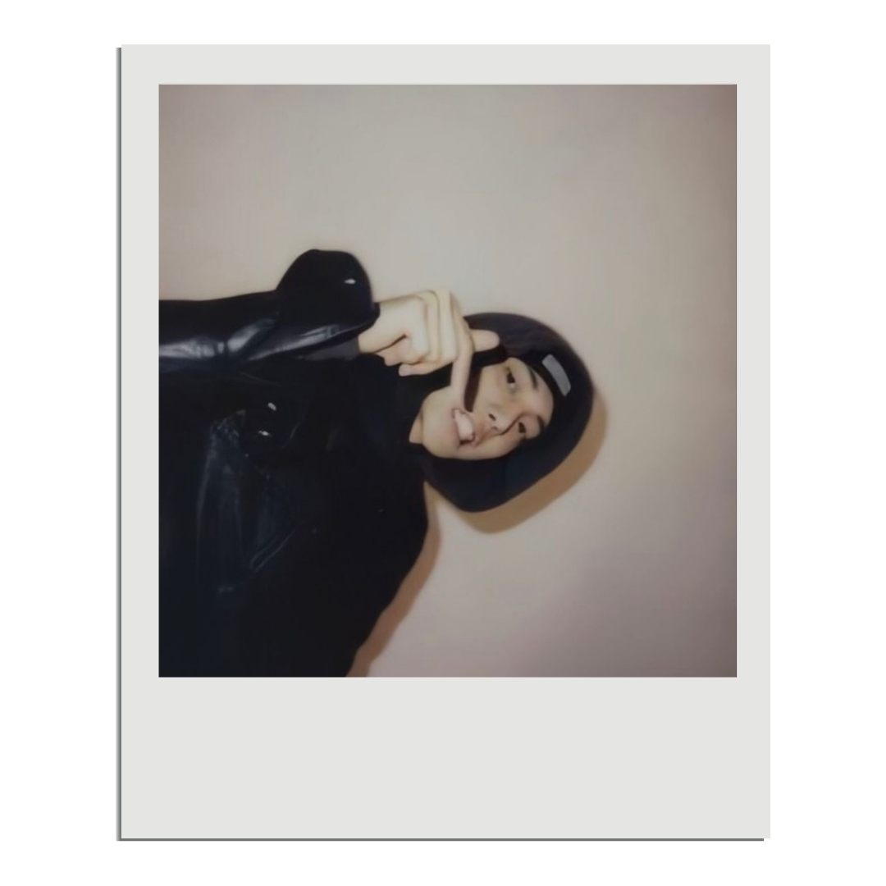
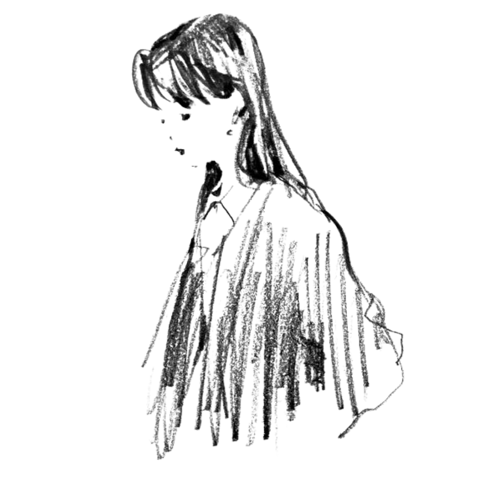
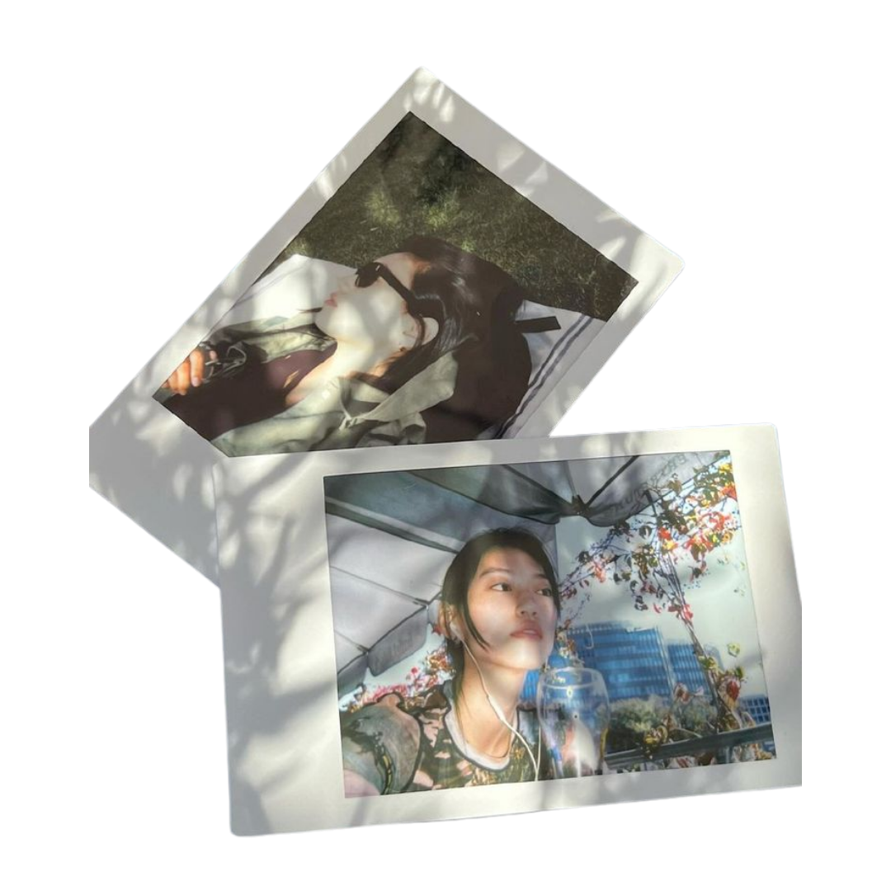
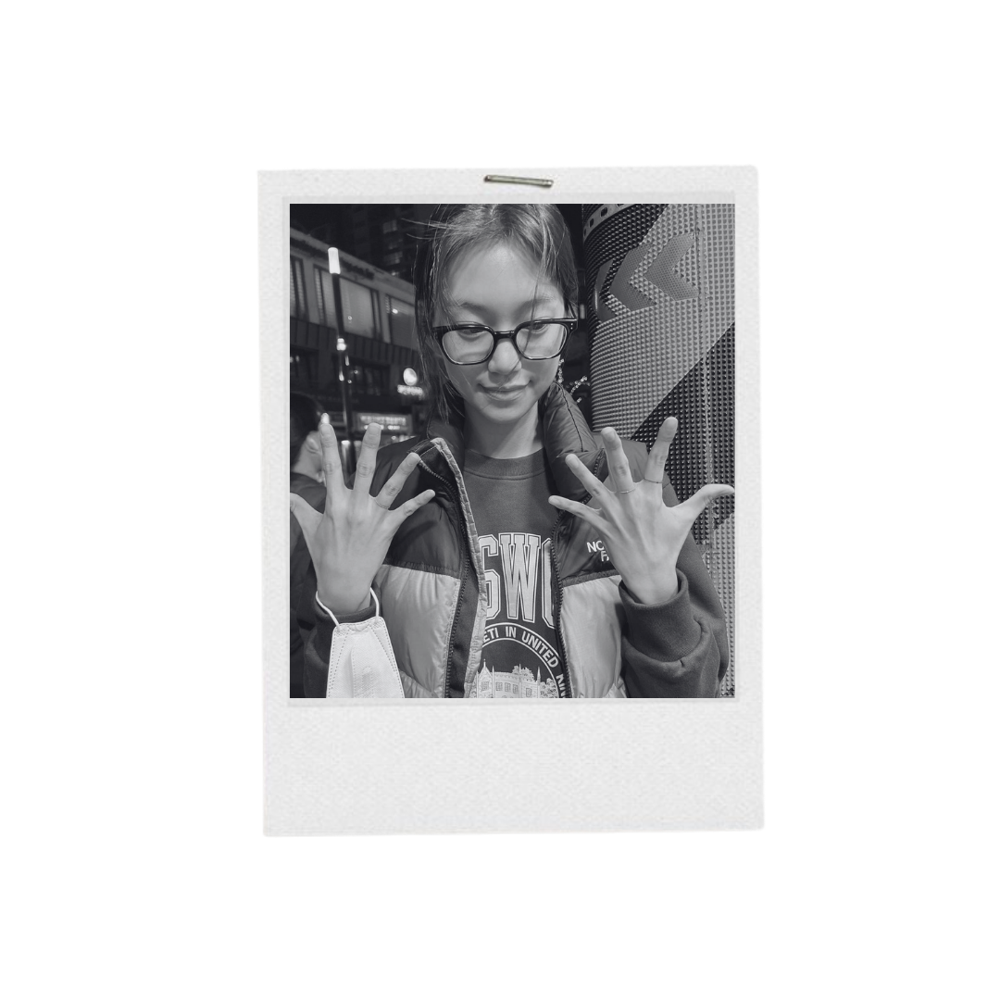
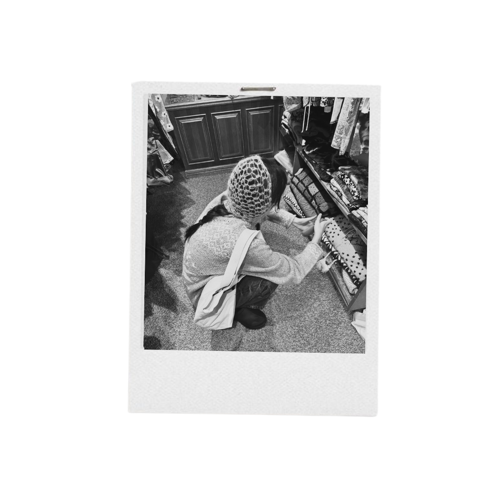
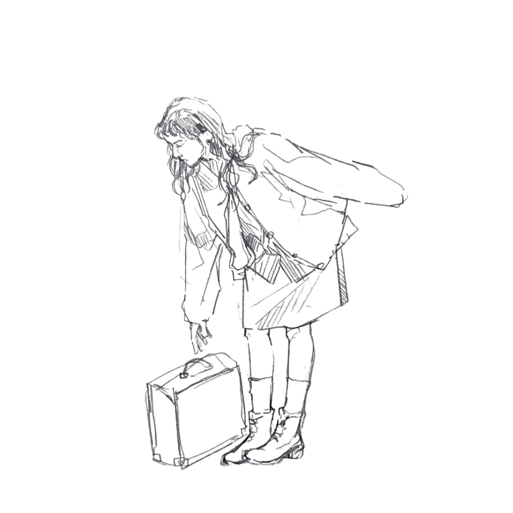

NOTES

there is the light that never goes out
135327
nitip passsword
Hey, diary.
Today, I came across a rather lovely girl, quietly absorbed in a fantasy novel.
The amusing part? She was reading the very same book I'd been carrying around for weeks. Quite the coincidence, really. Though, truth be told, the book stopped being the most interesting thing in the room the moment I noticed her.
I keep wondering where she's from, should I introduce myself?
cantik mba


Month Two
It's been two months since I first met her.
She's still every bit as lovely as I described on that very first page. Sweet, effortlessly so. I never would've guessed she was an engineering student of all things. Funny how life enjoys proving you wrong. Even now, she remains just as captivating in my eyes.
Lately, she's been telling me more about herself—little stories, random thoughts, fragments of her day. Perhaps it's nothing. Or perhaps, if I allow myself to be hopeful, it's the closest thing to a green light I'll ever get.
For now, I'll choose to believe it's the latter.
We've grown rather close now, and I daresay the interest seems mutual. We both make time for one another, we both linger in conversations longer than necessary, and yet... here I am, still too much of a coward to tell her how I truly feel.


She adores Totoro—though she insists on calling him the character from Spirited Away, which I'll let slide. She has a soft spot for ice cream, especially vanilla. And, rather importantly, she'd always choose a cone over a cup, simply because she enjoys the waffle just as much as the ice cream itself.
It's rather amusing, isn't it?
The more I learn about her, the more impossible it becomes not to like her.

SHE'S INSANE
she makes me crazy
lasolastalasolasta why why why pls
what if i like you
what if i have a crush on you
god please i want her
ugh ugh ugh lasolastalasolasta
the love of my life
maybe idk idk stands for la and love and lasta or whatever
i don't even know what i'm talking about anymore
she literally fried my brain
can i sue her for being this adorable
please help me or send her to me
im begging aaaaaaaaaaaaaaaaa
The thought crosses my mind far more often than I'd care to admit. I want to tell her that I like her, selfish as it may sound, I'd very much like her to be mine.
I only wonder... what would she say?
she say,